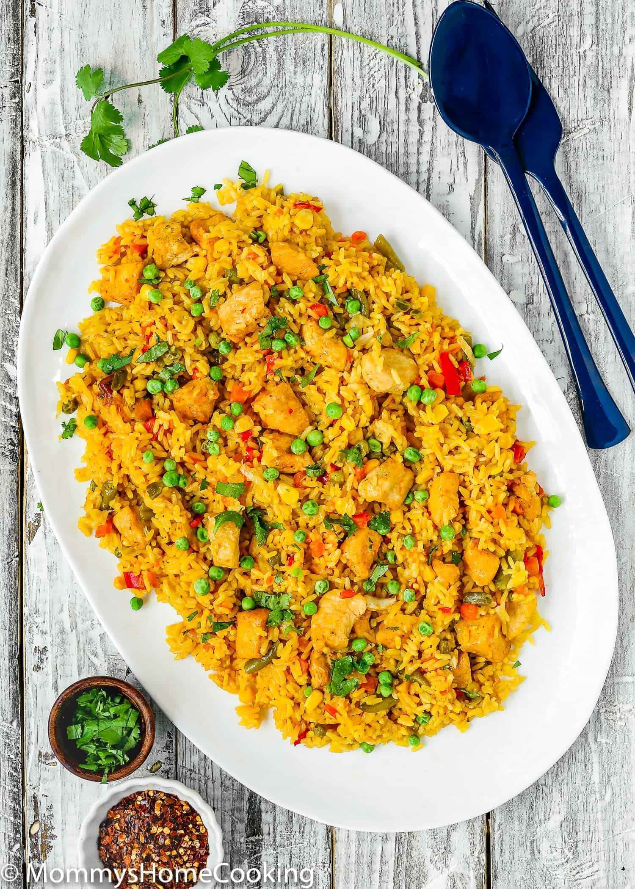
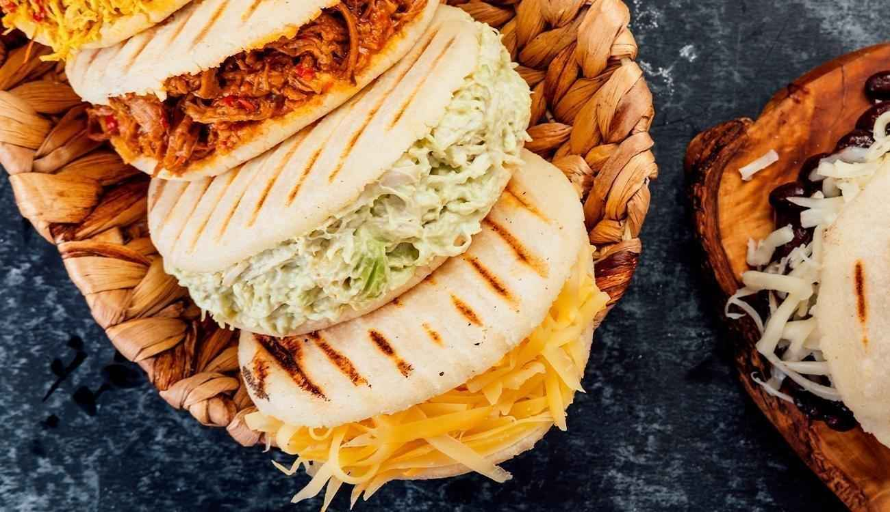

O Arroz con Pollo é um clássico da culinária colombiana. Feito com arroz soltinho, frango desfiado e uma deliciosa mistura de legumes e temperos, é um prato cheio de cor e sabor. Cada garfada traz o gosto autêntico da Colômbia, perfeito para compartilhar em família ou com amigos.
Bem Vindos ao Colombia Memories
Somos uma mãe e filha colombianas, apaixonadas por compartilhar o melhor da nossa terra com o povo português. Aqui você encontra uma seleção única de produtos autênticos da Colômbia, desde ingredientes típicos até pratos caseiros repletos de sabor e tradição. Nosso objetivo é levar um pedacinho da nossa cultura para sua mesa, sempre com carinho, qualidade e o verdadeiro sabor colombiano. Conheça nossos produtos e deixe-se levar pela magia culinária da Colômbia!
Nossos produtos mais adorados sao:
-
Arroz com Pollo -
Arepas As Arepas são verdadeiras joias da gastronomia colombiana. Estas deliciosas massas de milho podem ser servidas de várias formas: grelhadas, fritas ou assadas, e podem ser recheadas com queijo, carne, frango ou guacamole. Crocantes por fora e macias por dentro, são ideais para acompanhar qualquer refeição ou até como um lanche saboroso. Perfeitas para quem quer experimentar um pouco da cultura colombiana em cada mordida!
 -
Lechona A lechona colombiana é um prato tradicional feito de porco assado, geralmente recheado com arroz, ervilhas e temperos. Popular na região do Tolima, é servida em festas e celebrações, destacando-se pela pele crocante e carne suculenta, simbolizando a rica culinária colombiana.